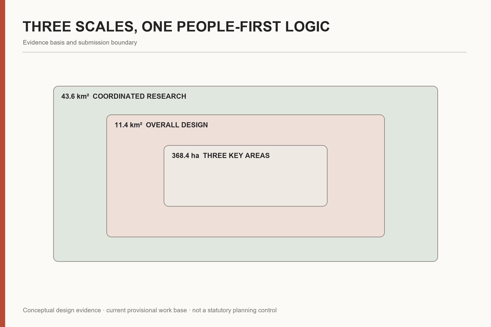
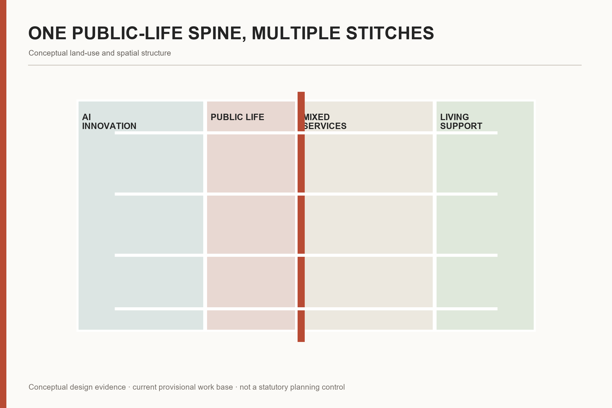
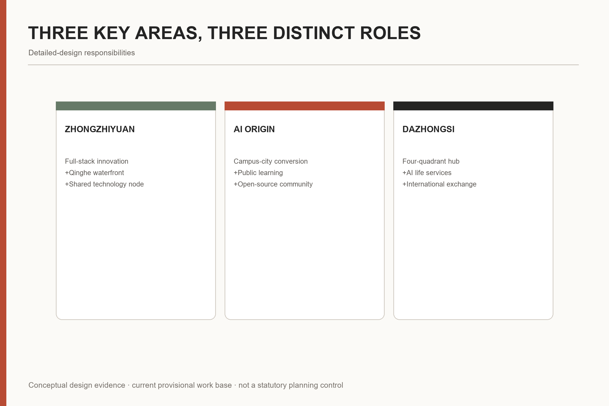
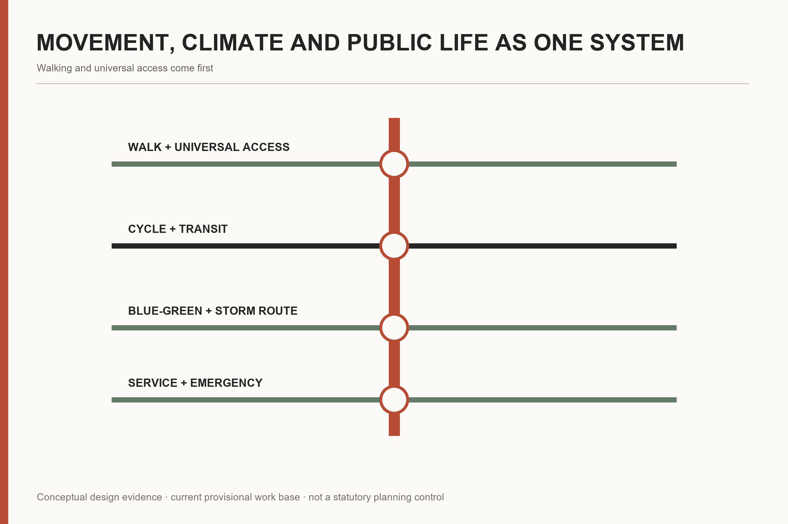
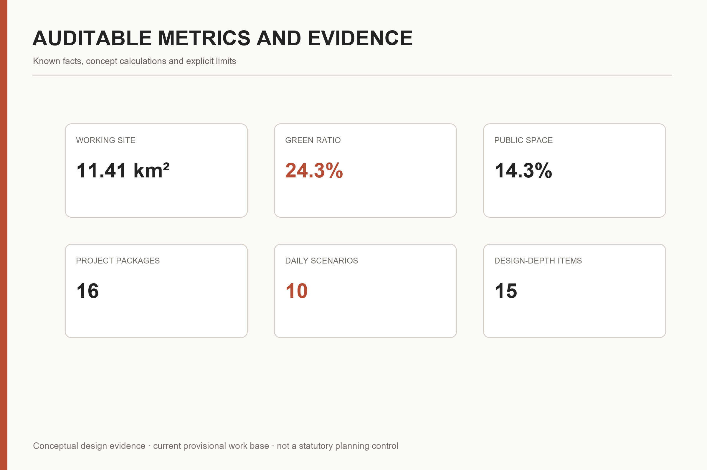

JING-ZHANG FOR PEOPLE
A people-first urban design proposal that turns the historic Jing-Zhang railway corridor into a shared everyday-life spine where AI is useful, optional, accountable and spatially grounded.
JING-ZHANG FOR PEOPLE
City for people. AI for use.
The proposal starts from a simple judgement: innovation resources are highly concentrated, yet everyday life deserves more attention. “People” means everyone—residents, researchers, entrepreneurs, students, workers, children, older people, disabled people and visitors. The historic railway becomes a shared public-life spine, while AI remains an assistive layer with human review and non-digital alternatives.
Design Basis and Source List
The proposal follows the official announcement, the AI-agent taskbook, the registered source inventory and the professional standards stored in the site package. The current site and key-area polygons are explicitly provisional constraints. They are used as the frozen working base for this submission, but never presented as statutory boundaries, approval evidence or exact official controls. 来源 来源 深度
Every planning claim is connected to a source, a geometry layer, a metric or a review matrix. The human-readable report explains the design; GeoJSON, metrics and matrices retain the auditable evidence chain. 来源 标准

Three-Level Scope Framework
The 43.6 km² coordinated research area addresses the regional AI ecosystem and future-city strategy; the 11.4 km² overall design area organises urban renewal, land use, transport, infrastructure and character; the three key areas, approximately 368.4 ha in total, test detailed spatial and implementation responses. 空间数据 空间数据 指标
These three scales are one reasoning chain: regional capability informs the corridor strategy; the corridor strategy structures renewal projects; the three key areas test whether the strategy can support real people, real journeys and accountable operations. 深度 深度

Coordinated Research Area: Industry and Future City Research
The AI ecosystem is organised as a reversible sequence: public question, original research, open-source collaboration, controlled testing, engineering transfer and public feedback. Universities, research institutes, enterprises, computing, data, finance, talent and urban scenarios are supporting conditions rather than isolated招商 lists. 来源 标准
Six international cases are used as mechanisms, not images to copy: Mila/Mile-Ex, Paris-Saclay DataIA, Punggol Digital District, Seoul Yangjae AI Hub and Helsinki’s AI Register provide positive lessons; Toronto Quayside is retained as a governance warning. Transfer rules emphasise open contribution, licensing, accountable testing, public value and exit mechanisms. 指标
Regional coordination is described through two-way flows of people, knowledge and scenarios. AI Origin supports learning and early conversion; Zhongzhiyuan supports open contribution, standards and controlled validation; Dazhongsi supports public service, urban experience and international exchange. These are conceptual interfaces, not confirmed intergovernmental agreements.
Overall Design Area: Urban Renewal and Regulatory-Plan-Level Urban Design
“One public-life spine, multiple east-west stitches and three key-area interfaces” is the core structure. The former dividing railway becomes a continuous everyday corridor. Cross-links reconnect communities, campuses, parks, stations and workplaces, with walking, cycling and universal access taking priority. 空间数据 空间数据 深度
The concept-design land-use layer covers the full provisional submission boundary and coordinates AI innovation, public service, living support and blue-green systems. Its classifications and calculated values are design evidence, not statutory zoning. 空间数据 指标 标准
Urban renewal follows three rules: retain what carries memory and daily value; adapt structures that can support new shared uses; test infill only where public access, climate performance and service capacity improve. Final parcel-level decisions remain subject to professional survey and approval.
Detailed Design of Key Areas
Zhongzhiyuan AI Autonomous Innovation Acceleration Area is proposed as a garden-based full-stack innovation district. The Qinghe waterfront, shared technical courtyards, open testing, standards governance and low-carbon exchange spaces form its public structure.
Beijing AI Origin Community is proposed as a campus-adjacent conversion and talent community. Shared ground floors, public learning, open-source collaboration, heritage reuse, daily services and station connections make innovation visible and usable beyond institutional boundaries.
Dazhongsi AI Industry Cluster is proposed as an urban intelligent-economy and international-exchange district. A four-quadrant station interface, mixed public services, green-space reuse and street-level commercial activity support both workers and surrounding communities. 空间数据 空间数据 空间数据

AI Innovation Ecosystem, Personas, and AI+ Scenarios
Eight stress-test user groups are used: residents, researchers, entrepreneurs, students, service workers, children and carers, older people, and disabled people or visitors. Their continuous day—from arrival and work to care, rest and return home—tests whether innovation actually improves life. 指标
Ten everyday scenario cards cover safe school travel, accessible healthcare, late-night return, cool walking, bookable shared ground floors, heritage community rooms, resident-defined urban questions, auditable testing, legible cultural interpretation and storm-resilient routes. Three additional industry tests address model and computing safety, open-agent collaboration, and accessible public-service terminals. 指标 指标
Every AI scenario declares purpose, operator, data minimum, human reviewer, refusal option, stopping condition and non-digital alternative. AI may assist; it may not replace planning approval, human accountability or equal access.
Land Use, Building Scale, and Retain-Renovate-Demolish Strategy
The submission provides a complete conceptual land-use geometry for machine review and a building-node layer for three public-contribution locations. Existing buildings are not assigned final retain/renovate/demolish outcomes without survey, ownership, heritage, structure and fire-safety evidence. 空间数据 空间数据 深度
Capacity, height and mixed-use ratios are scenario tests. They guide comparison of public benefit, housing and service capacity, but are not stated as approved FAR, statutory height or investment commitment. 指标 深度
Transport, Rail, Municipal Infrastructure, and Public Services
The mobility framework prioritises walking and universal access, cycling, public transport and then private vehicles. It targets station integration, cross-rail connections, North Fifth Ring crossings, school and workplace journeys, bicycle parking, emergency access and late-night safety. 空间数据 深度
Municipal and AI infrastructure are treated together: drainage, energy, communications, edge computing, maintenance and emergency operation must retain manual fallback and safe offline performance. Detailed pipelines and engineering alignments are outside this conceptual submission. 深度

Blue-Green Network, Public Space, and Urban Character
The blue-green strategy is evaluated through bodily experience: continuous shade, rest and drinking water; safe routes during heat and storms; accessible river and park interfaces; and reduced disturbance near homes. The green corridor and public-life spine are spatially auditable design layers. 空间数据 空间数据 指标
Urban character combines Jing-Zhang railway heritage, Zhongguancun innovation culture and everyday community life. Heritage is sustained through use—learning, childcare, small shops, workshops and public discussion—rather than isolated as a technological spectacle. 标准 深度
Renewal Projects, Implementation Policy, and Phasing
Sixteen concept project packages organise delivery: the railway heritage park, cross-corridor stitches, shared technical and learning nodes, station interfaces, public-service components, climate-resilient routes, cultural interpretation and long-term operations. They are mapped to near-, medium- and long-term conceptual phases. 空间数据 指标
Implementation uses reversible pilots, public-benefit agreements, transparent operating responsibilities and stage gates. A project advances only when access, safety, data governance, maintenance and community feedback are demonstrably ready. 深度 深度
Metrics, Area Recalculation, and Compliance Matrix
The metric system separates official approximate task areas, geometry-derived concept values and values that remain outside the available evidence. The current provisional geometry is frozen as the working submission base, so its calculated site, green, public-space and building values are reproducible but not statutory. 指标 指标 指标
The compliance matrix covers 17 announcement requirements plus agent.1–agent.6. The standards matrix covers mandatory planning references; the depth matrix records 15 completed formal design-depth items with explicit limitations. 指标 指标

Risk, Copyright, and Compliance
Primary risks are boundary precision, unavailable statutory controls, data and model misuse, accessibility failure, heritage misinterpretation, operational discontinuity and unclear media rights. Each risk has a disclosure, reviewer and fallback. 来源 深度
All spatial moves are conceptual suggestions for professional teams to deepen. No statement in this package is an approved plan, government commitment, parcel-level demolition decision, engineering alignment or procurement promise. Generated renderings communicate intent; GeoJSON, metrics and matrices remain the audit layer.
References
Key references include the official announcement, the AI-agent open-call taskbook, the site package, registered public sources, the Urban Design Management Measures, land-use classification guidance and planning documentation standards. Complete records, retrieval dates, use limitations and licenses are stored in sources.json, standard_matrix.json and report/copyright_statement.md. 来源 来源 标准